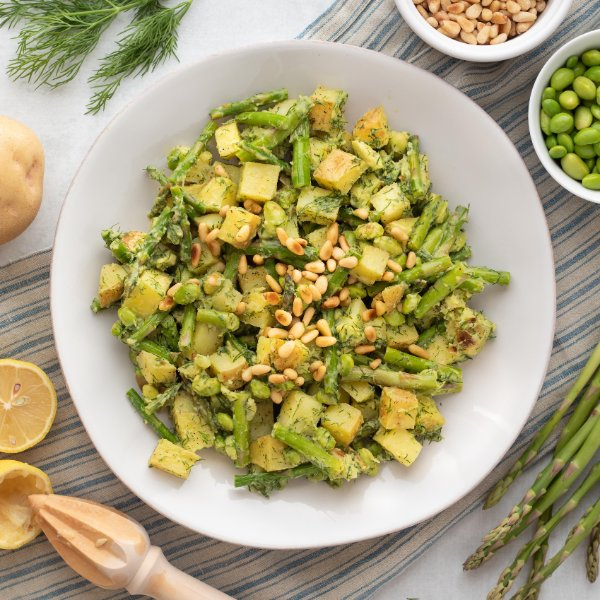

Warm Avocado-Dill Potato Salad with Asparagus, Edamame & Pine Nuts

Total Time
35 min
Nutrition (per serving)
700.6 kcalCalories
21.9 gProtein
74.3 gCarbs
40 gFat
Full nutrition table
| Calories | 700.6 kcal |
| Total fat | 40 g |
| Saturated fat | 4.9 g |
| Trans fat | 0 g |
| Cholesterol | 0 mg |
| Sodium | 71.7 mg |
| Carbohydrates | 74.3 g |
| Fiber | 21.9 g |
| Sugars | 9.5 g |
| Protein | 21.9 g |
| Potassium | 2533.2 mg |
| Calcium | 140.3 mg |
| Iron | 8.1 mg |
| Vitamin A | 1859.9 IU |
| Vitamin C | 61.3 mg |
| Vitamin D | 0 IU |
Cookware
Ingredients
- 2 small bunchesasparagus
- 2avocados
- 2 cupsedamame
- 1 small bunchfresh dill
- 1lemon
- ½ cuppine nuts
- 6 mediumyellow potatoes
- black pepper
- extra virgin olive oil
- salt
Steps
- Preheat oven to 450°F.
- Wash and chop the potatoes into ½-inch pieces. Place on a large baking sheet pan along with the edamame; drizzle with oil, season with salt and pepper, and spread out in a single layer.6 medium yellow potatoes
2 cups edamame
4 tsp extra virgin olive oil
1 tsp salt
½ tsp black pepper - Place the potatoes and edamame in the oven (it doesn't have to be fully heated) and bake until potatoes are fork-tender, about 15 minutes.
- Meanwhile, wash and dry the fresh produce.2 avocados
1 small bunch fresh dill
1 lemon
2 small bunches asparagus - Halve and pit the avocados. Slice thinly while still in skin, then scoop out into a large bowl. Mash well with a fork or potato masher.
- Using a knife, shave the dill leaves off the stems; discard the stems and mince the leaves. Add to the bowl.
- Juice the lemon into the bowl. Add water, salt, and pepper, and whisk to combine the dressing; add more water, 1 Tbsp at a time, if needed to reach a creamy, dressing-like consistency.¼ cup water
1 tsp salt
½ tsp black pepper - Trim and cut asparagus into 2-inch pieces. Spread in an even layer on a second, large baking sheet pan; drizzle with oil, and season with salt and pepper.4 tsp extra virgin olive oil
½ tsp salt
⅛ tsp black pepper - Remove potatoes and edamame from the oven and toss; return them to the oven, along with the sheet of asparagus. Cook until vegetables are tender, about 10 minutes.
- Remove potatoes, edamame, and asparagus from the oven and carefully add to the bowl with the dressing; toss well to combine.
- To serve, divide potato salad between dishes, top with pine nuts, and enjoy!½ cup pine nuts